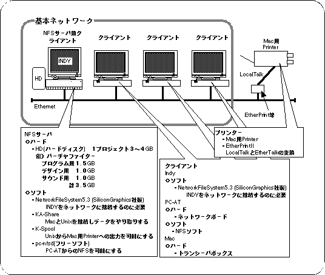
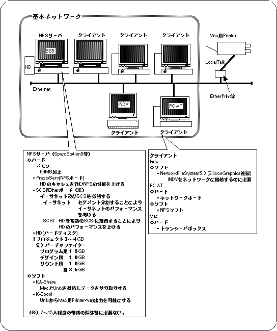
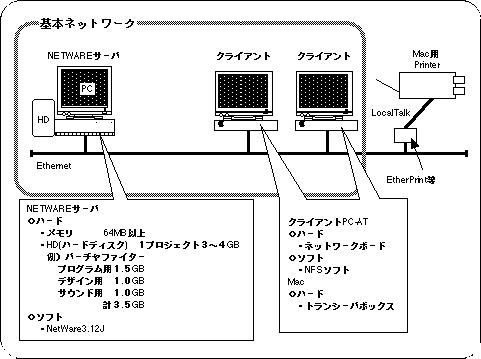
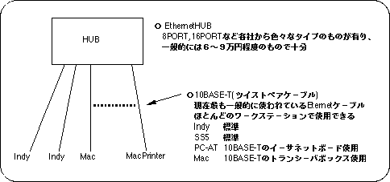
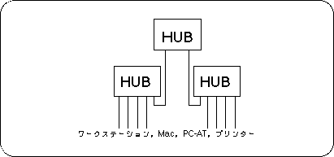

★SGL User's Manual
★開発環境
★SGL User's Manual
★開発環境
前記のプログラマ、デザイナー、サウンドの開発システムは、ネットワークで結ばれることにより、より効率的に開発できるようになります。ネットワーク環境は作業人員の数（マシンの台数）で異なっています。 具体的なネットワーク構成（サーバ、クライアント）を開発人数によって場合分けをして下記に説明します。
図5-1 NFSサーバ兼クライアントのネットワーク環境
(3〜6人構成用)

図5-2 サーバ専用機を設けたネットワーク
（７人以上構成用が目安）

図5-3 PC-AT及びMacのみのネットワーク環境

図5-4 １台のHUBで接続（8〜16台）

図5-5 ２台以上のHUBで接続（16台以上）

★SGL User's Manual
★開発環境